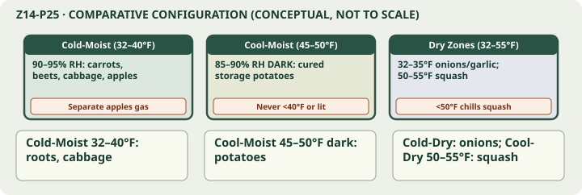

Z14-P25 · Food production and preservation · New manuscript
Match stored crops to the four distinct root-cellar temperature and humidity zones
Prevent shriveling, chilling injury, and premature sprouting by separating crops that require incompatible temperature and moisture conditions.
When it applies · Basements, root cellars, cool closets, unheated mudrooms, and garages storing fresh autumn produce.
Equipment · Four-zone storage chart, dedicated min-max thermometer and hygrometer, and ventilated crates/bins.

Actions
- Separate moist winter produce into two distinct UMN Extension temperature zones: Cold & Moist (32–40°F, 90–95% RH) for carrots, beets, parsnips, turnips, cabbage, and apples, versus Cool & Moist (45–50°F, 85–90% RH in total darkness) for potatoes.[P05]
- Separate dry-loving crops into two distinct low-humidity zones: Cold & Dry (32–35°F, 60–70% RH) for cured dry onions and garlic, versus Cool & Dry (50–55°F, 50–70% RH) for cured winter squash, pumpkins, and sweet potatoes.[P05]
- Remember that chilling tropical-origin crops (winter squash, sweet potatoes, tomatoes) below 50°F triggers irreversible chilling breakdown and rot, while storing carrots in warm dry air shrivels them limp in days.[P05]
Failure recognition · Storing winter squash at 34°F beside wet carrots (chilling rot) or storing onions in a damp 95% RH root bin (rapid neck sprouting and mold).[P05]
Verify · Confirm actual measured temperature and humidity of each storage spot match the assigned crop zone.[P05]
Stop or change course · Temperatures dropping to 30°F or below in porches/garages require moving produce promptly indoors before freezing ruins cellular structure.[P05]
Evidence and editorial notes
- P05 · University of Minnesota Extension · Harvesting and Storing Home Garden Vegetables (current web edition)
- Section: Root-Cellar and Cold-Storage Temperature/Humidity Zones · Conditions: Basements, root cellars, unheated porches, and insulated cold bins
Support: Match stored produce to distinct storage regimes: cold-moist (32–40°F, high humidity for carrots/beets/cabbage), cool-moist (45–50°F for potatoes), cold-dry (32–35°F dry for onions/garlic), and cool-dry (50–55°F dry for winter squash); separate ethylene-producing apples from sensitive vegetables.
Limitations: Storing potatoes below 40°F converts starch to sugar; freezing temperatures ruin unhardened stored roots. · Conflicting evidence: None; prevents treating one basement temperature as universal for all crops.
Editorial note: Core root-cellar zoning and monitoring evidence in Z14. · Specialist reviewer: Post-harvest horticulture and food storage
Primary source · checked 2026-11-24
Source lineage · UMN Extension Harvesting and Storing Vegetables; new manuscript · Classification · New manuscript.